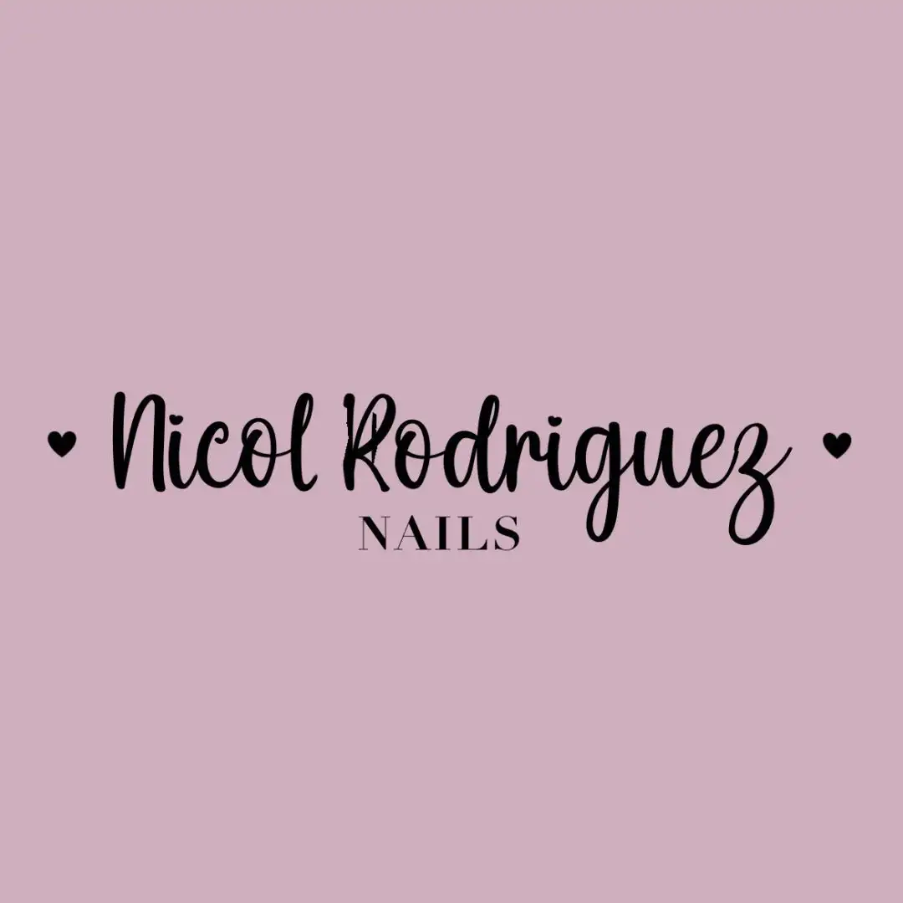

<footer class="footer container">
  <section class="footer__container">
    <a href="#coquette" aria-label="Inicio" class="footer__logo">
      
    </a>

    <nav aria-label="Menú principal" class="footer__nav">
      <ul class="footer__menu">
        <li class="footer__menu-item">
          <a href="#coquette" class="footer__menu-link">Coquette</a>
        </li>
        <li class="footer__menu-item">
          <a href="#servicios" class="footer__menu-link">Servicios</a>
        </li>
        <li class="footer__menu-item">
          <a href="#consulta" class="footer__menu-link">Contáctanos</a>
        </li>
      </ul>
    </nav>

    <ul class="footer__social" aria-label="Redes sociales">
      <li class="footer__social-item">
        <a href="#" class="footer__social-link">
          <fa-icon [icon]="faFacebook"></fa-icon>
        </a>
      </li>
      <li class="footer__social-item">
        <a href="#" class="footer__social-link">
          <fa-icon [icon]="faInstagram"></fa-icon>
        </a>
      </li>
      <li class="footer__social-item">
        <a href="#" class="footer__social-link">
          <fa-icon [icon]="faTikTok"></fa-icon>
        </a>
      </li>
    </ul>
  </section>

  <hr class="footer__divider" />

  <section class="footer__bottom">
    <a href="http://jarg-dev.com" target="_blank" rel="noopener noreferrer">
      &copy; 2025 JA__RG | Arquitecto de Software. Todos los derechos reservados.
    </a>
  </section>
</footer>
